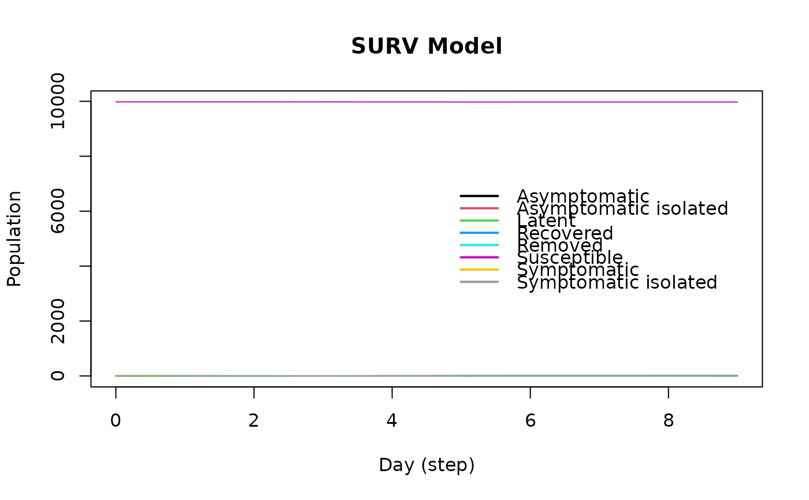

SURV model
Usage
ModelSURV(
name,
prevalence,
efficacy_vax,
latent_period,
infect_period,
prob_symptoms,
prop_vaccinated,
prop_vax_redux_transm,
prop_vax_redux_infect,
surveillance_prob,
prob_transmission,
prob_death,
prob_noreinfect
)
# S3 method for epiworld_surv
plot(x, main = "SURV Model", ...)Arguments
- name
String. Name of the virus.
- prevalence
Initial number of individuals with the virus.
- efficacy_vax
Double. Efficacy of the vaccine. (1 - P(acquire the disease)).
- latent_period
Double. Shape parameter of a 'Gamma(latent_period, 1)' distribution. This coincides with the expected number of latent days.
- infect_period
Double. Shape parameter of a 'Gamma(infected_period, 1)' distribution. This coincides with the expected number of infectious days.
- prob_symptoms
Double. Probability of generating symptoms.
- prop_vaccinated
Double. Probability of vaccination. Coincides with the initial prevalence of vaccinated individuals.
- prop_vax_redux_transm
Double. Factor by which the vaccine reduces transmissibility.
- prop_vax_redux_infect
Double. Factor by which the vaccine reduces the chances of becoming infected.
- surveillance_prob
Double. Probability of testing an agent.
- prob_transmission
Double. Raw transmission probability.
- prob_death
Double. Raw probability of death for symptomatic individuals.
- prob_noreinfect
Double. Probability of no re-infection.
- x
Object of class SURV.
- main
Title of the plot.
- ...
Currently ignore.
See also
epiworld-methods
Other Models:
ModelSEIRCONN(),
ModelSEIR(),
ModelSIRCONN(),
ModelSIRLogit(),
ModelSIR(),
ModelSIS(),
epiworld-data
Examples
model_surv <- ModelSURV(
name = "COVID-19",
prevalence = 20,
efficacy_vax = 0.6,
latent_period = 4,
infect_period = 5,
prob_symptoms = 0.5,
prop_vaccinated = 0.7,
prop_vax_redux_transm = 0.8,
prop_vax_redux_infect = 0.95,
surveillance_prob = 0.1,
prob_transmission = 0.2,
prob_death = 0.001,
prob_noreinfect = 0.5
)
# Adding a small world population
agents_smallworld(
model_surv,
n = 10000,
k = 5,
d = FALSE,
p = .01
)
# Running and printing
run(model_surv, ndays = 100, seed = 1912)
#> _________________________________________________________________________
#> Running the model...
#> ||||||||||||||||||||||||||||||||||||||||||||||||||||||||||||||||||||||||| done.
#> done.
model_surv
#>
#> ________________________________________________________________________________
#> SIMULATION STUDY
#>
#> Name of the model : Surveillance
#> Population size : 10000
#> Number of entities : 0
#> Days (duration) : 100 (of 100)
#> Number of variants : 1
#> Last run elapsed t : 5.00ms
#> Last run speed : 181.75 million agents x day / second
#> Rewiring : off
#>
#> Global actions:
#> - Surveilance program (runs daily)
#>
#> Virus(es):
#> - Covid19 (baseline prevalence: 20 seeds)
#>
#> Tool(s):
#> - Vaccine (baseline prevalence: 50.00%)
#>
#> Model parameters:
#> - Infect period : 0.8000
#> - Latent period : 4.0000
#> - Prob of symptoms : 5.0000
#> - Prob of transmission : 0.2000
#> - Prob. death : 0.0010
#> - Prob. no reinfect : 0.5000
#> - Surveilance prob. : 0.1000
#> - Vax efficacy : 0.6000
#> - Vax redux transmission : 0.7000
#>
#> Distribution of the population at time 100:
#> - (0) Susceptible : 9980 -> 9978
#> - (1) Latent : 20 -> 0
#> - (2) Symptomatic : 0 -> 0
#> - (3) Symptomatic isolated : 0 -> 0
#> - (4) Asymptomatic : 0 -> 0
#> - (5) Asymptomatic isolated : 0 -> 0
#> - (6) Recovered : 0 -> 22
#> - (7) Removed : 0 -> 0
#>
#> Transition Probabilities:
#> - Susceptible 1.00 0.00 0.00 0.00 0.00 0.00 0.00 0.00
#> - Latent 0.00 0.68 0.08 0.09 0.00 0.00 0.15 0.00
#> - Symptomatic 0.00 0.00 0.00 0.00 0.00 0.00 1.00 0.00
#> - Symptomatic isolated 0.00 0.00 0.00 0.60 0.00 0.00 0.40 0.00
#> - Asymptomatic - - - - - - - -
#> - Asymptomatic isolated - - - - - - - -
#> - Recovered 0.00 0.00 0.00 0.00 0.00 0.00 1.00 0.00
#> - Removed - - - - - - - -
#>
# Plotting
plot(model_surv, main = "SURV Model")
